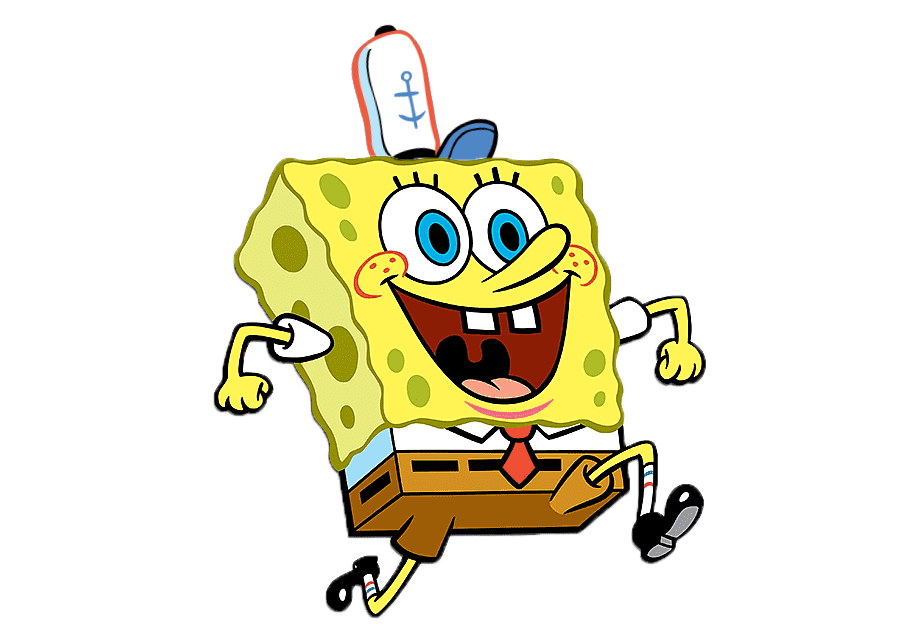

KRUSTY KRAB
The Krusty Krab is a prominent fast food restaurant in the underwater city of Bikini Bottom. It is owned and operated by Eugene H. Krabs (Mr. Krabs), who invented its famous Krabby Patty sandwich. Mr. Krabs has two employees: Squidward Tentacles and SpongeBob SquarePants, who work as the cashier and fry cook, respectively. Patrick Star has also worked at the Krusty Krab for several brief stints in a variety of positions.
The Krusty Krab usually attracts customers from Bikini Bottom because of the Krabby Patty's renowned taste and the fact that Plankton's restaurant has a menu consisting of chum (bait consisting of fish parts), which is considered mostly inedible by the other characters. As a result, the Krusty Krab has become one of the most successful restaurants in the city. In the show, SpongeBob calls it "the finest eating establishment ever established for eating". Mr. Krabs frequently exploits his restaurant's popularity, such as engaging in price gouging and charging his own employees for use of the building's services.
The Menu for the krusty Krab is below. It has the famous Krabby Patty available for a low low price